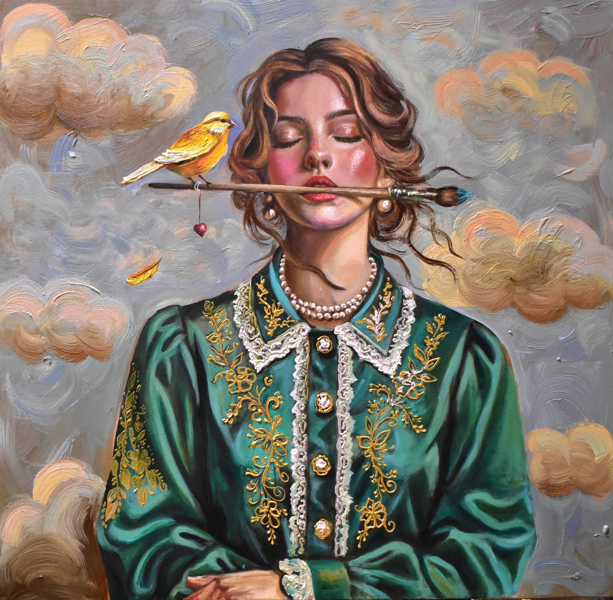
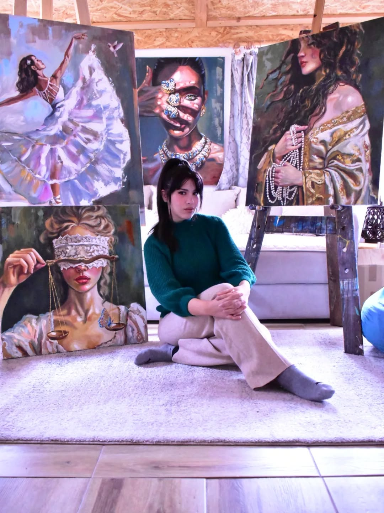
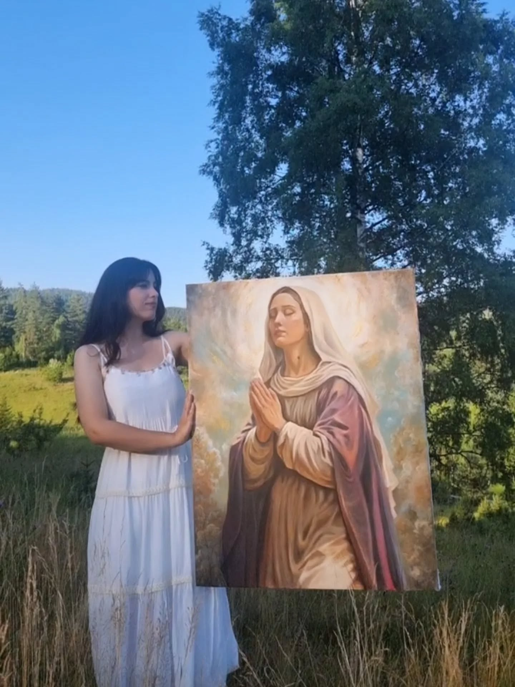
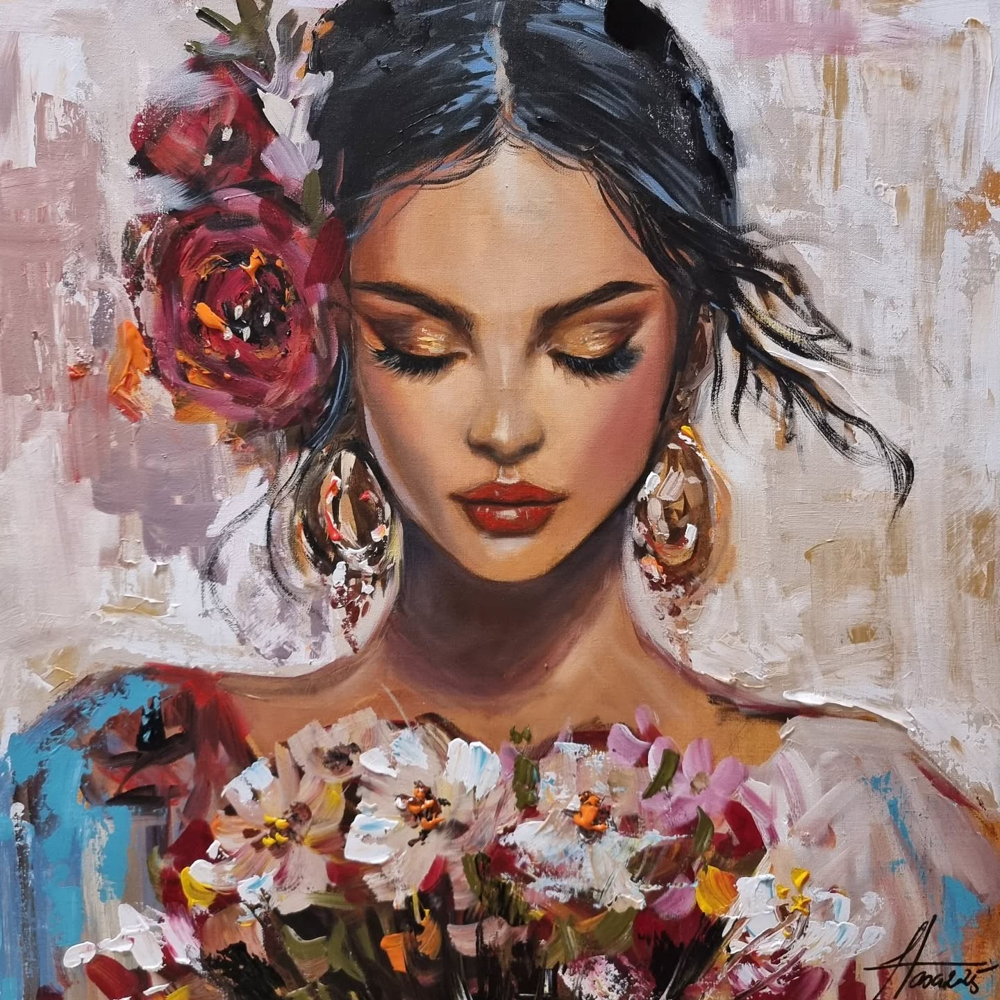
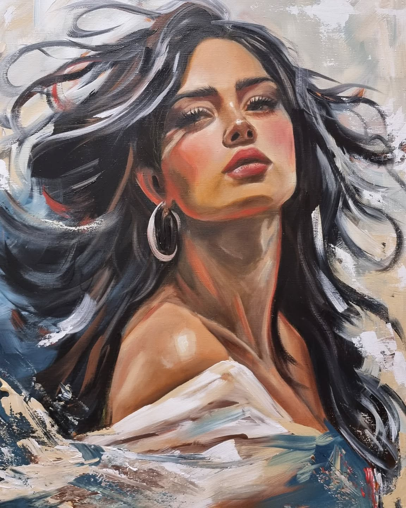
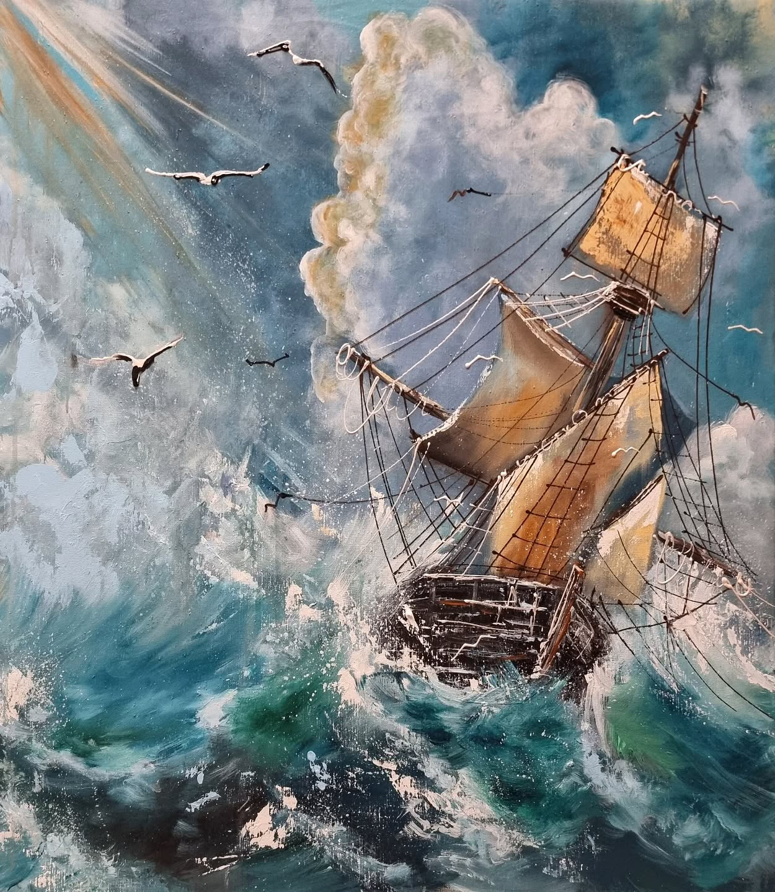
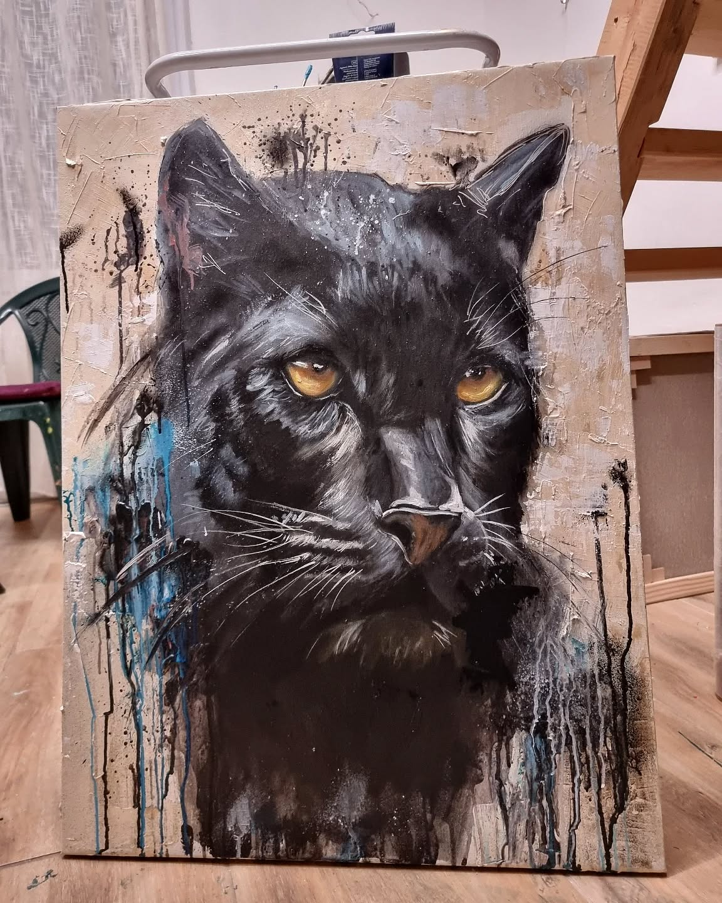
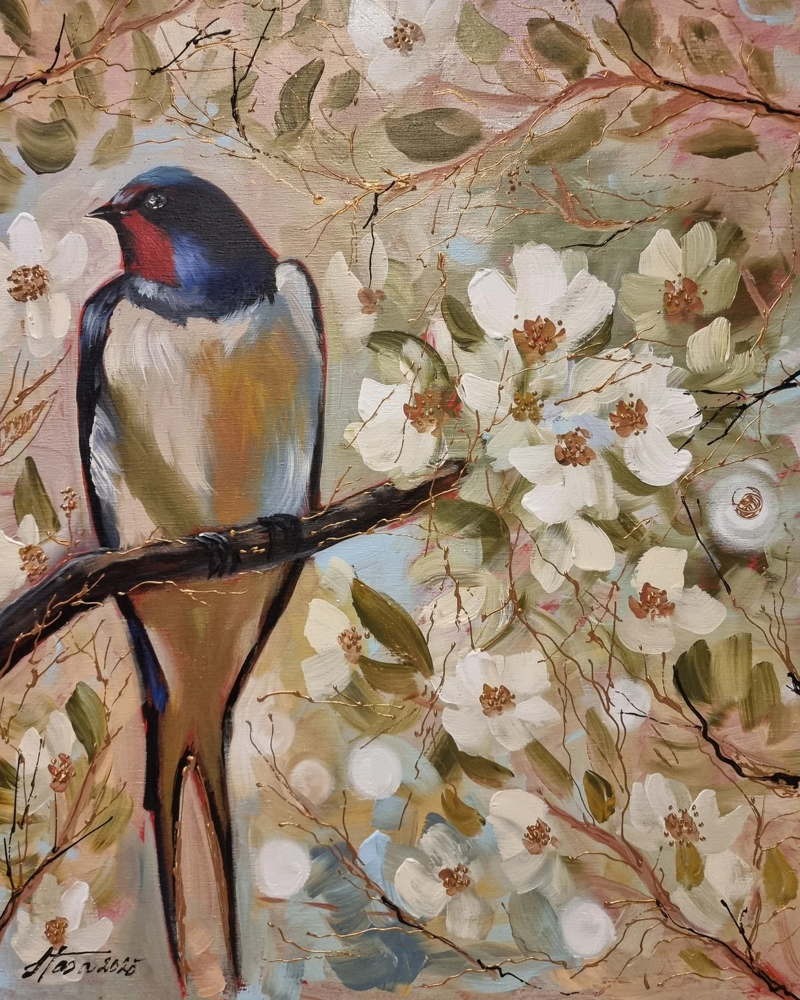
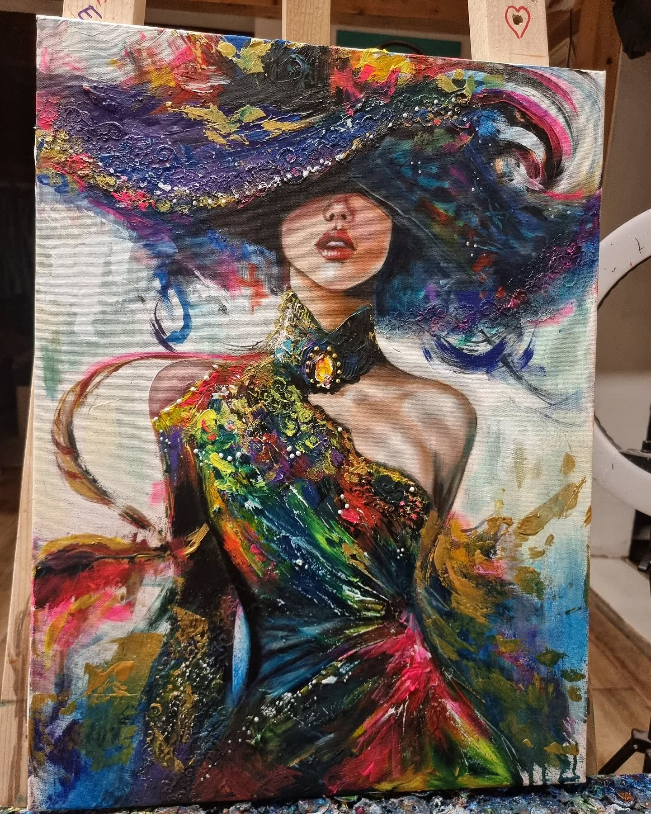

Službeni portfolio i digitalni arhiv akademske slikarice Nataše Stević. Autentična umjetnost stvorena u tišini planinskih prostranstava.

Nataša Stević je akademska slikarica i ilustratorica koja je gradsku vrevu zamijenila tišinom, mirom i nepresušnom inspiracijom čarobne planine Romanije.
U svom ručno stvorenom šumskom ateljeu, daleko od užurbanog ritma modernog društva, ona oživljava neotkrivene svjetove kroz ilustracije knjiga, radove na platnu i monumentalne murale koji krase javne prostore.

— Nataša Stević
Postoje radovi koji nadilaze samu umjetnost i postaju osobni svjetionici. Za autoricu, ovo platno predstavlja čistu materijalizaciju unutarnje svjetlosti i nade.







Bilo da se radi o ilustriranju knjiga, pretvaranju fasada u monumentalne murale ili stvaranju unikatnih slika po narudžbi – vaša vizija može oživjeti u šumskom ateljeu. Stupimo u kontakt.
Atelje
Planina Romanija, Bosna i Hercegovina